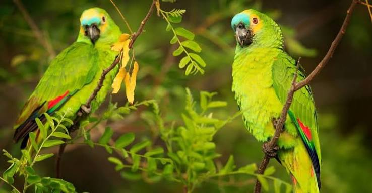
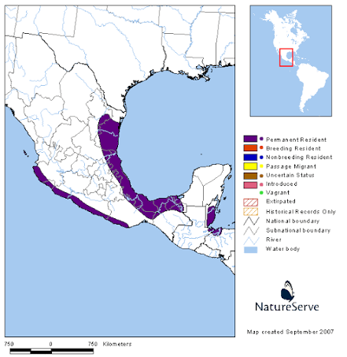

Yellow-naped Amazon Parrot
| Yellow-naped Amazon Parrot | |
|---|---|
| Kingdom: | Animalia |
| Phylum: | Chordata |
| Class: | Aves |
| Order: | Psittaciformes |

The Yellow-naped Amazon Parrot is an endangered bird species only found in the tropical rainforests of South America.
The portions are small to size, a very colorful bird with a distinctive patch on the neck and contains the ability to mimic human speech.
Due to major habitat loss and illegal trafficking, the Yellow-naped Amazon Parrot is one of the rarest birds in the world.

| Behaveral Habits |
|---|
Yellow-naped Amazon Parrots are social birds, often seen in pairs or small groups.
They are diurnal, meaning they are active during the day and rest at night.
They are also known for their ability to mimic human speech and other sounds.
| Conservation Status |
|---|
The Yellow-naped Amazon Parrot is listed as vulnerable on the "IUCN Red List of Threatened Species"; with an increasing declining population trend(30%).
Habitat loss and degradation, pollution, and hunting for their fur and meat are the main threats to their survival.
This decline is mainly due to habitat loss, illegal pet trading and over-pollution.
| Habitat and Range |
|---|
Yellow-naped Amazon Parrots are found in the tropical rainforests of South America.
This includes countries like Brazil, Colombia, and Venezuela.
They prefer areas with a varaety of trees and massive food supply to live off of.